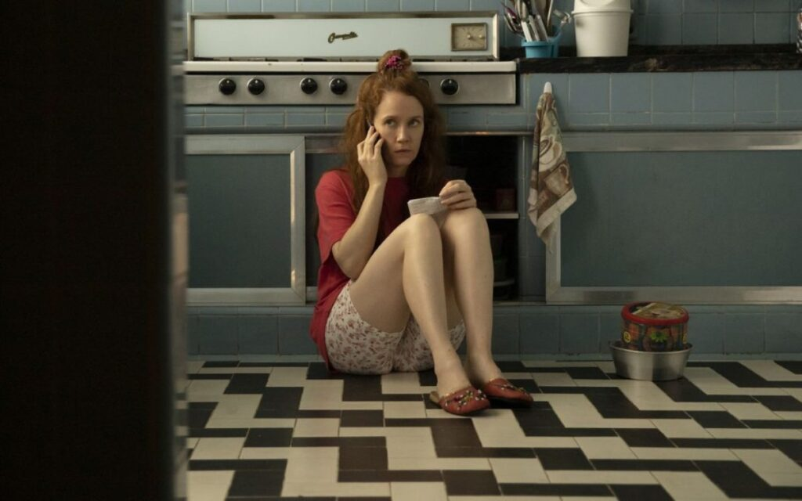

Bom Dia, Verônica - Raphael Montes
28 de março de 2025 13:28
Esse se tornou mais um dos meus livros favoritos do Raphael Montes. É uma história tensa e cruel que a cada capítulo te deixa incrédulo, viciado e te prende do início ao fim. Por meio da trama, o livro faz uma espécie de “denúncia” a todas as mulheres que sofrem ou sofreram algum tipo de violência. E por mais que os personagens não sejam reais, a problemática é real sim, e precisa ser tratada.
Durante a leitura eu fiquei na torcida por Verônica. Por mais que em as vezes ela falava algumas coisas sem noção. Eu a julguei por certas ações, mas olhando com seu olhar, entendo seus motivos. Mas a narrativa envolve tanto que te deixa com a sensação de não poder fazer nada, te deixando horrorizado com tudo que acontece.É transmitido ao leitor como o sistema trata as mulheres de forma injusta, fazendo com que as suas vozes sejam silenciadas. Que é o que acontece com a personagem principal, que não tem permissão para resolver casos, mas abraça a oportunidade de mostrar suas habilidades investigativas e decide mergulhar sozinha em dois casos de assassinos.
Um ponto muito interessante é que a história traz uma grande crítica ao descaso, a corrupção e a negligência com as vítimas, principalmente mulheres. Fica evidente como o sistema burocrático permite que crimes graves fiquem sem resposta. E quando alguém decide desafiar esse sistema em cadeia, surge a falta de apoio e o silêncio que encobre mais e mais crimes. Um exemplo disso é o personagem Carvana, que prefere arquivar os casos do que investigar de verdade — se não tem provas, ele simplesmente desiste.
"Devia ser proibido um chefe pedir esse tipo de coisa, afinal eu era escrivã de polícia. Mas, no Brasil, não tem jeito; tudo funciona meio torto mesmo."
Com o sucesso e o impacto do livro, Bom Dia, Verônica ganhou uma adaptação em série pela Netflix. Se você gostou do livro, você vai gostar da série — Que embora o foco seja o mesmo, as obras se diferem na maneira em que os eventos são apresentados e por alguns outros detalhes que vamos comentar a seguir. ALERTA DE SPOILER.
Livro X Série
Vale ressaltar que apenas a 1ª temporada da série foi baseada no livro. Sendo, 2ª e 3ª temporada originais, que dão continuidade aos casos investigados por Verônica, expandido a história além do livro e mostrando ao espectador uma profundidade maior dos casos apresentados.
Entretanto, a série é uma adaptação quase idêntica ao livro. Quase tudo é seguido a risca. Exceto por alguns detalhes que você só encontra no livro. Vejamos Abaixo:
A Própria Verônica
Na série, Verônica tem uma personalidade um pouco diferente do livro, ela é uma mulher destemida e virtuosa, que faz de tudo pelo que acredita ser certo. Já no livro, seus atos são bem questionáveis. Muitas vezes, ela ignora a ética profissional e chega a cometer alguns delitos para conseguir o que quer, atuando como justiceira.
Dentro do Politicamente Correto
A série traz um enredo mais humanizado em cima dos personagens. Enquanto o livro já é mais frio e cruel nessa questão, onde os fatos são narrados de maneira bizarra e explícita.
Personagem Inexistente
No livro, o conflito gira em torno dos dois casos que Verônica invetiga (o assassino Brandão e o necrófilo Gregório). Na série, foi criada a personagem Anita que está na linha de sucessão de Carvana. Mas as duas não se bicam, o que cria aquela tensão de embates, e quebra a idéia machista do homem sempre estar no topo e a mulher abaixo dele.
Marido de Verônica
Paulo, é apresentado na série como um homem apaixonado e dedicado à família. Entretanto, por trás das páginas, ele mantém um caso extraconjugal. A diferença é que ele tem até um filho fora do casamento. (Babado). Na narrativa do livro, Verônica acaba descobrindo sobre o caso romântico de seu marido e isso inclusive é um dos motivos pelos quais ela decide forjar sua morte e abandonar sua família. Outro ponto é que depois disso, no livro ela não volta para a família, dando uma abertura para uma sequência?.
Golpista do amorideal.com
O assassino Gregório é um personagem muito bizarro, que aplica golpe em mulheres marcando encontros por site de relacionamento, onde após um jantar com uma bebida batizada, ele tira tudo de suas vítimas. Ele é tido como um necrófilo no livro. Na série, ele deixa ácido na boca de suas vítimas para marcá-las, mas no livro, as feridas são decorrentes de um fungo presente apenas em cadáveres.
Janete e Brandão
No livro, Janete acabou sendo afastada de seus amigos e familiares por Brandão. Já na série, temos a irmã de Janete, que chega a visitá-la em sua casa.
A aparência de Janete também se altera entre a obra original e o audiovisual. No livro, Janete é descrita como uma morena corajosa, influenciada pelas palavras de Verônica. Já na série, a personagem é retratada de forma diferente, com cabelo ruivo e uma personalidade mais frágil e medrosa.
Por fim, o livro revela muito mais detalhes sobre o passado de Brandão, e mostra que ele é uma pessoa muito mais doentia do que na série. Conta sobre tudo que ele passou com a mãe e a avó. Trazendo uma forte questão indígena.
Conclusões Finais
Em resumo, as duas obras são impecáveis! Mas digo que é para poucos, pois a abordagem é bem pesada. Mas, os amantes de suspense e terror vão adorar. E para quem é viciado em Raphal Montes assim como eu, os livros devem ganhar sequência! afirma o autor em uma matéria da CNN Brasil.
O próprio Rafael afirmou que a série foi planejada para três temporadas e que a idéia inicial era basear a série em uma trilogia de Bom Dia Verônica (seguindo sequência; boa tarde Verônica e boa noite Verônica). Mas o sucesso foi tão certeiro que a série ultrapassou o livro, e a trama já foi encerrada com três temporadas, enquanto apenas o primeiro volume do livro foi publicado.
Porém Montes afirma que ainda têm planos de escrever as continuações, mesmo que a série já esteja um pouco avançada. Mas ainda não temos previsão de lançamento para o segundo volume de "Bom Dia, Verônica". De qualquer forma, aguardo ansiosamente.
"Uma policial ajudando a matar...A minha vida está mesmo muito errada."